News in the Age of Recommendation
How recommender-system platforms reshape the production, distribution, and consumption of news
15 June 2026
Open questions
- Thinking of the recent stories you have published, through which channel did each story reach its audience?
- When writing a story, can you form an expectation about the channel on which it will find its audience? Do you sometimes frame a story to maximize its reach on a specific platform?
- How often do you look skeptically at your reach figures and try to understand why a story over- or under-performed?
Core questions of this session
- How has the transition to recommender-system platforms reshaped the production, distribution, and consumption of news?
- What normative consequences does this transition carry?
- What can be done about it?
Three affordances of the rec-sys platforms
- Mobile-first consumption
- Short video clips
- Recommender system curation

Combined, these affordances set up a dialectic between short format and the recommender system.
Subscription vs. recommender-based platforms
| Subscription logic | Recommendation logic | |
|---|---|---|
| Who owns the audience | The producer | The platform |
| How distribution works | Readers picked a newspaper and came back to it; reach was predictable | Feed assembled per user, per session |
| Following an account | Meant you were served the content | No longer guarantees you see it |
The relationship with the audience changes hands.
The dialectic between format and algorithm
enables the algorithm
(fine-grained behavioral data)
short format viable
(it provides the navigation)
Each is made viable by the other: lower production costs, more attention to distribute, more data.
The power shift
- By taking over the circulation of content, the algorithm subordinates both producers and consumers.
- Producers optimize less for the audience’s satisfaction and more for the algorithm’s.
- Consumers no longer control what they are exposed to, weakening the feedback that once held producers accountable to demand.
Open question
If you needed to report on something happening on social media, how would you proceed?
Where would you even look?
The reporting gap
Experiences are individualized to a degree where aggregating a handful of observations is risky: your feed, a colleague’s, a screenshot do not add up to what the platform actually showed people.
Describing a platform-wide phenomenon requires systematic data, which is very hard to obtain.
This is the problem my research addresses
A near-complete census of TikTok production, used to measure what the platform actually circulates and rewards.
Guinaudeau, Rutherford, Greenfield, Messing & Tucker (CSMaP @ NYU)
How much have we collected?
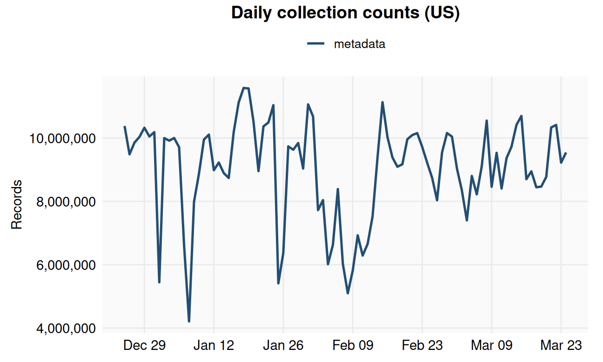
A near-complete census: 3.6B US posts between Oct. 2024 and Oct. 2025.
Topic-specific production

Entertainment dominates production and consumption; political topics are a thin slice, yet earn high average views.
Topic-specific engagement
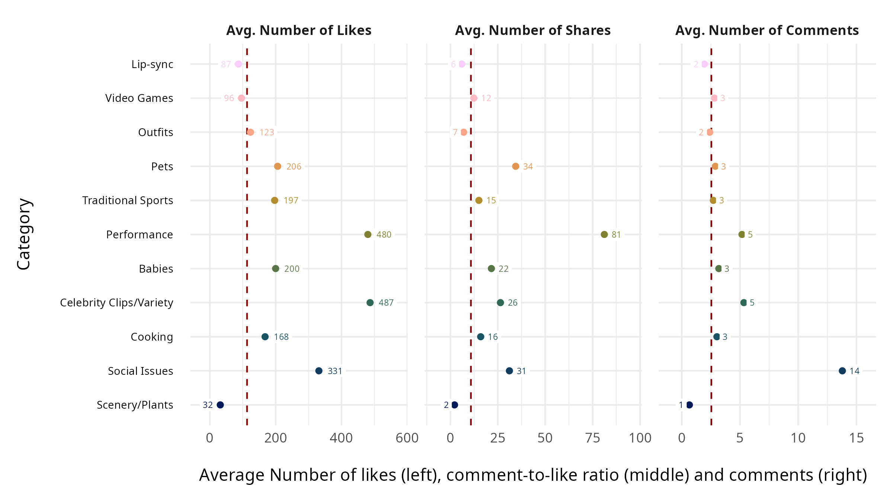
Social Issues draws far more comments per video: political content provokes conversation, not just views.
How much content is political over time?
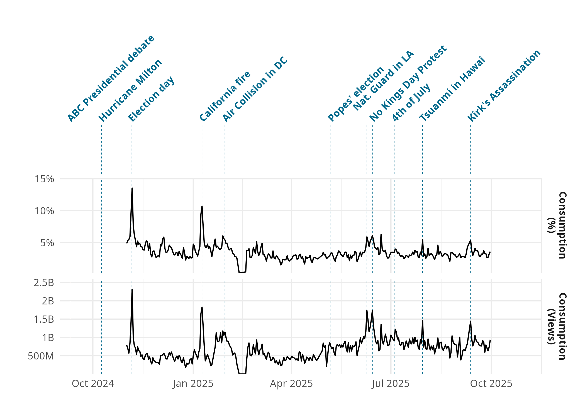
Both production and consumption of political content are driven by events.
Open question
What kind of ideological content penetrates the platform best?
Centrist content is what works best
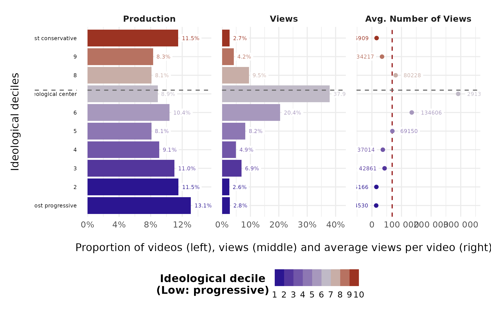
No clear algorithmic or demand bias toward the extremes; moderate content is favored.
So how to go viral?
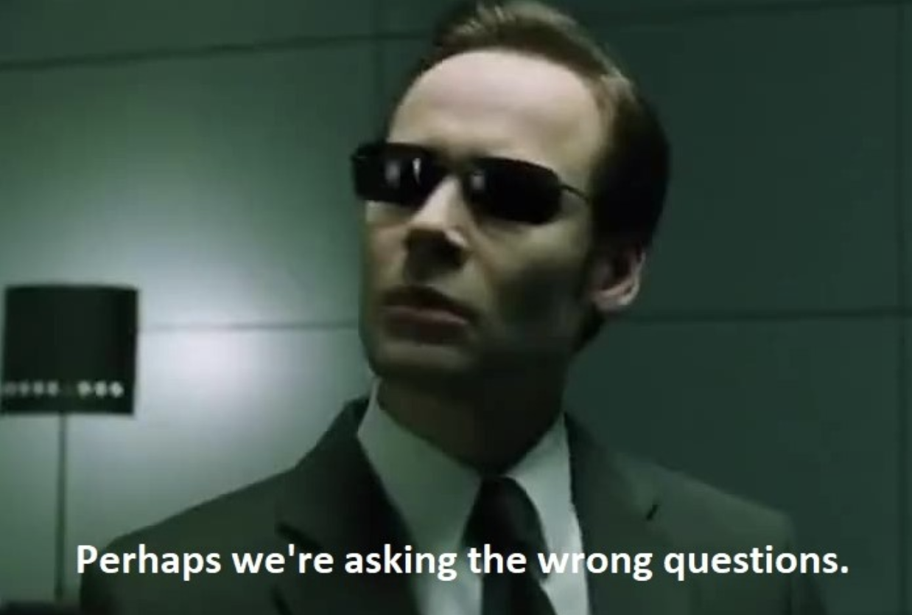
Virality is an equilibrium, not a recipe
- Whatever “works” decays as everyone copies it.
- The platform continuously pushes new trends: sounds, formats, challenges.
- To stay visible, producers must keep following them.
Agenda-setting moves one level up: not which stories, but which forms and rhythms of storytelling.
The attention dream
- TikTok promises that any producer can earn attention, as long as their content is good.
- It has been celebrated as a beacon democratizing content production.
A meritocracy of attention?
In reality, attention is heavily skewed

In reality, attention is heavily skewed
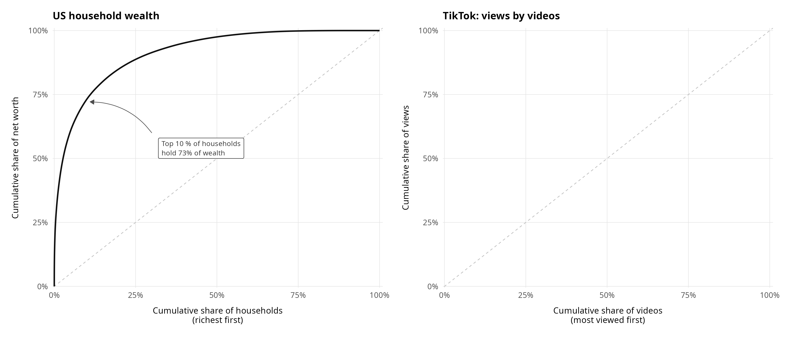
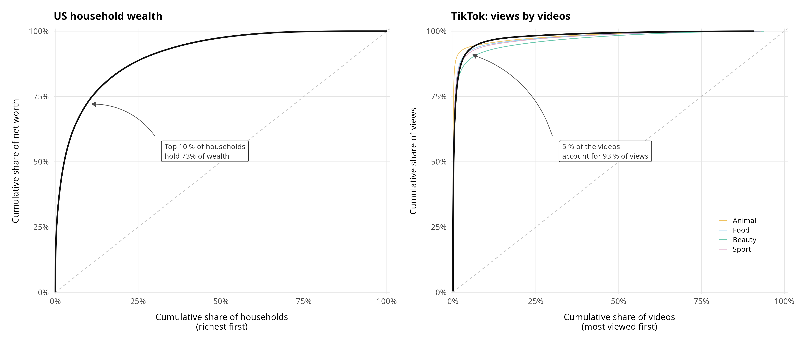
A small elite of producers captures the overwhelming share of attention.
The real American attention dream
How the platform sustains the illusion:
- Manufacture a few high-attention producers, so that becoming famous looks feasible to everyone.
- Spread the remaining attention broadly enough to keep producers producing.
What most producers actually receive are the super-crumbs.
Which producers drive the conversation?
Traditional news outlets now face competition from a new type of producer:
influencers and aggregators.
The new attention elite in the US
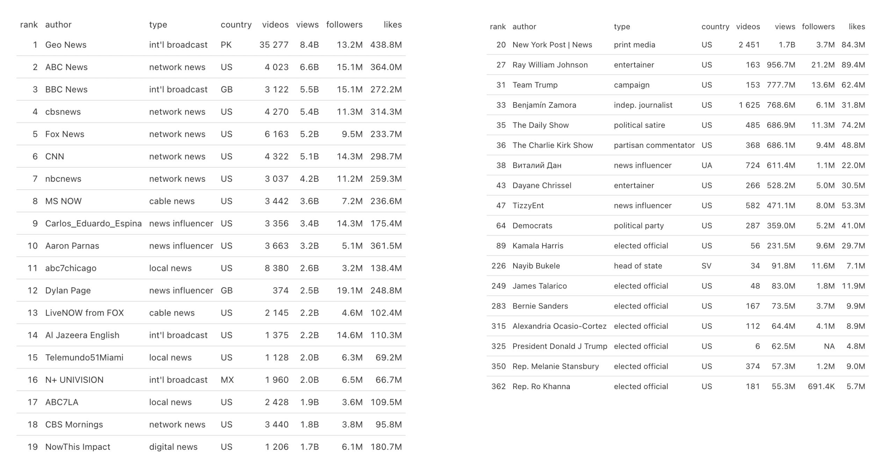
The trend-driven news cycle accelerates
- Information quality suffers: focus shifts to pace, format, and trends instead of substance.
- Democracy suffers: low deliberative quality, and simplified messages reward populism.
- Media power erodes: outlets become responsive to the platform rather than the reverse.
So, what can we do?
Given everything we have discussed,
what is in journalism’s power to change?
Solution 1: Own your distribution
- Treat platforms as the top of the funnel, never the whole funnel.
- If a platform is your only channel, you have no leverage and no safety (Hindman).
- Hiring charismatic creators is risky: they hold the audience and the leverage, and they can walk, taking the audience with them.
An audience reached only through someone else’s algorithm is not an audience you own.
Solution 2: Regulation for transparency
- Platform accountability: hold platforms responsible for what spreads on them.
- Producer accountability: make producers feel responsible for what they publish.
- Transparency: data access for researchers and journalists, plus technical specification of the algorithm, to reveal the hidden costs of profit maximization.
In the EU, this is what the DSA (Article 40) is meant to deliver.
Appendix: How we obtain the data
Enumerating TikTok IDs
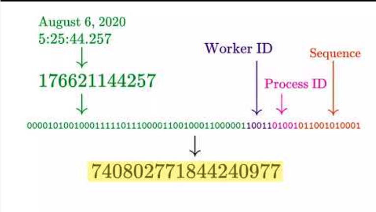
Each post carries a numeric ID whose structure encodes its creation time (Steel et al. 2025).
Enumerating TikTok IDs
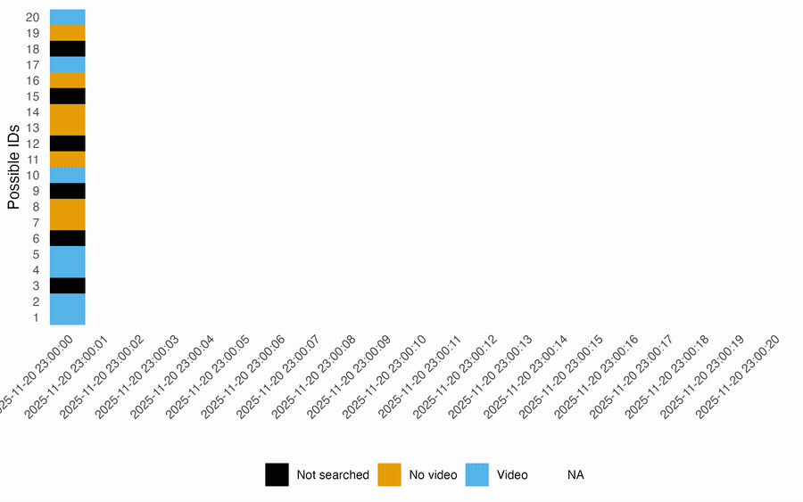
Theoretically 4.3B IDs/second; in practice the search space narrows to ~400k candidates, so we try them all.
Overview of the collection infrastructure
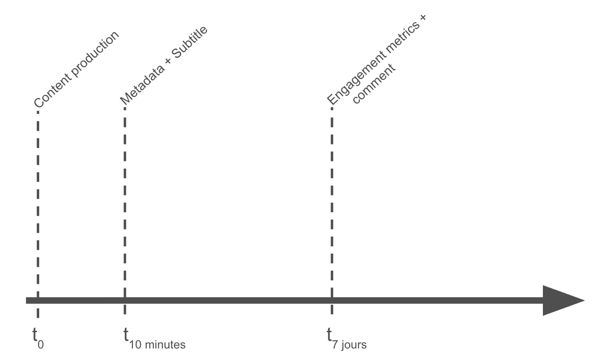
How many data points?
3.6B US posts (Oct. 2024 to Oct. 2025)

90B posts globally
Random coverage stabilizes around 80%; roughly 1% of content and 3% of consumption is political.
2026 CMPF Summer School for Journalists and Media Practitioners